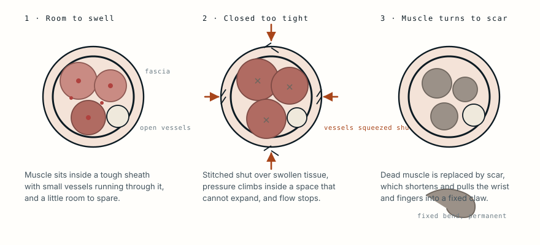

The shark did not cause the contracture
A 39-year-old was bitten on the thigh and arm while swimming on holiday. The thigh, where far more tissue was lost, was rebuilt and healed. The hand she was left with was lost to the operation that came first.
- Specialty
- Plastic and reconstructive surgery
- Patient
- Woman, 39, previously healthy
- Injury
- Shark bite to the left lateral thigh and left arm, on holiday in Mexico
- First surgery
- Abroad: forearm repaired and closed under tension; thigh closed with the recovered amputated part as a graft
- Antibiotics
- No clear record
- Transfer
- To a Canadian centre on day 6
- On arrival
- Dusky fingers, no palpable pulses, wrist and fingers already fixed in flexion
- Reconstruction
- Four washouts, two skin grafts, a free anterolateral thigh flap and a free abdominal flap
- Outcome
- Leg salvaged; uncomplicated course at one year
- 0 hthe bite
- day 0closed under tension
- day 6arrives in Canada
- weeksfour washouts, two flaps
- 1 yearthe leg is saved
What a shark bite actually is
A shark bite is not a cut. The teeth are serrated and the jaw shakes, so tissue is torn out rather than divided, and the wound is left with ragged edges, crushed muscle at its margins and pieces missing that cannot simply be pulled together.
It is also filthy in a specific way. Seawater and a shark's mouth carry organisms that most hospitals do not routinely cover: Vibrio species above all, alongside Aeromonas and marine Mycobacterium. Standard skin-flora antibiotics miss them, and a Vibrio wound infection in devitalised tissue moves quickly.
Everything that follows in this case comes from those two facts: tissue was missing, and the wound was contaminated.
The first operation
She was operated on where the attack happened. The published account of what was done there is incomplete, which is itself part of the story, but the essentials are recorded.
In the forearm, muscles, tendons and lacerated nerves were repaired and the wound was closed under tension. In the thigh, where a piece of her had been bitten away, the recovered detached tissue was laid back into the defect as a composite graft. There was no clear record of which antibiotics she received, if any.
Each of those three decisions is understandable in the moment and each one was the wrong way round.
Why tension closure did the damage
Muscle sits inside compartments wrapped in fascia, a sheet tough enough that it does not stretch. An injured limb swells. If the skin over a swollen compartment is stitched shut, the swelling has nowhere to go and the pressure inside the closed space climbs.

It does not take much. Once the pressure inside a compartment approaches the pressure in the small vessels running through it, those vessels are squeezed shut and the muscle stops receiving blood, even though the artery further up the arm is still open and a pulse can still be found further down.
Muscle deprived of blood dies within hours. What replaces it is scar, and scar contracts. The result is a Volkmann contracture: the forearm muscles shorten permanently and pull the wrist and fingers into a fixed bend that cannot be straightened.
By the time she reached a second hospital, that had already happened.
The graft that had nothing to live on
The thigh was closed by putting the bitten-off tissue back as a composite graft, meaning tissue replaced without reconnecting its blood supply.
Composite grafts do work, but only when they are small. A graft has no circulation of its own and survives only by absorbing fluid from the wound bed until new vessels grow in, which limits what can live to a few millimetres of thickness. A piece of thigh is far beyond that.
What is left when a large composite graft fails is worse than the original defect: dead tissue sitting in a contaminated wound.
Six days later
She arrived at the Canadian unit on the sixth day after the attack.
Her arm was dressed but had not been splinted. The fingers were dusky with patches of dead skin. No pulse could be felt at the wrist, though a weak one could still be heard with a hand-held Doppler, which is exactly the finding that misleads people: a detectable pulse at the wrist says nothing about whether the muscle upstream is being perfused.
Her wrist and fingers were held in flexion. The contracture was established.
What the second team did
The approach was the opposite of the first: open the wounds rather than close them, and repeat.
She had four washouts. This is the standard of care for a contaminated wound with dead tissue in it, and the reason it is repeated is that the boundary between live and dead tissue moves over the first days. A single debridement almost always leaves some tissue that will declare itself dead a day later.
Once the wound bed was clean, the thigh was rebuilt with tissue that brought its own blood supply: a free anterolateral thigh flap and a free flap raised from the abdominal wall, each disconnected from its original vessels and joined to vessels at the recipient site under a microscope. Two split-thickness skin grafts covered the rest.
A flap can survive on a bed a graft could never take on, because it does not depend on the wound to feed it. That is why it is the answer to a large defect with a poor base.
What was saved and what was not
Her leg was salvaged. Her course afterwards was uncomplicated and she was doing well at a year.
Her arm carried the contracture, which is the part no later operation fully undoes. Released and reconstructed, a Volkmann contracture improves; it does not become a normal hand.
The distinction is worth sitting with. The shark caused an enormous soft tissue injury to her thigh, and modern reconstruction dealt with it. The lasting disability was in the limb where less tissue was lost, and it came from how that limb was closed.
The principle underneath
Contaminated wounds with tissue missing are left open. They are washed out, debrided more than once, and closed later when the bed is clean and the swelling has settled. Closing them early feels tidier and traps the two things that cause the harm: bacteria and pressure.
The same logic runs through several cases here. A grinder-crushed hand is assessed by whether the tissue bleeds, not by how it looks. A fungal infection at an insulin pump site had to be cut back repeatedly because the boundary kept moving. In all of them the discipline is the same: resist the urge to close, and go back to look again.
What this case teaches
The bite removed tissue from her thigh and the thigh was rebuilt. The hand was not injured as badly and it is the hand she was left with. A swollen, contaminated forearm was stitched shut under tension, the pressure inside a compartment that cannot expand rose above what the small vessels could resist, and the muscle died while a pulse was still detectable at the wrist. That is the whole mechanism, and it is why the rule for wounds like this is to leave them open, wash them out more than once, and close them only when there is nothing left to trap.
Adapted from A shark attack treated in a tertiary care centre: case report and review of the literature, published in Archives of Plastic Surgery in 2017 by a team at the University of Toronto. The details are summarised in the author's own words rather than reproduced, and the clinical photographs from that paper are not reproduced here. Background on marine wound pathogens and compartment syndrome is drawn from standard references. The diagram is original to MedicaseHub and may be reused freely. This article is not medical advice. Read the full disclaimer.
Related cases
- The hand arrived still inside the machineA welder freed him in theatre. The amputation was decided by something much simpler than the damage.
- Burn scar contracture: the girl whose face healed to her chestTen months of unopposed healing pulled her chin onto her chest.
- It does not eat flesh. It cuts off the blood.Her IV antifungals were not working. The answer was to stop relying on the bloodstream entirely.